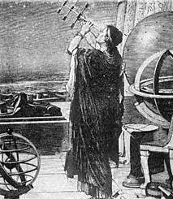
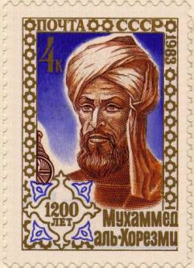

The Greek astronomer Hipparchus (c. 190 BCE--c. 120 BCE) was born in Nicaea, a city in what is now Turkey. In the year 135 BCE, he was stargazing and saw a bright point of light he didn't recognize. The constellation Scorpio had a new star which neither Hipparchus nor anyone he knew had ever seen before. Was it genuinely new, or had he just overlooked it before? To make sure he didn't miss anything else, he decided to map all the stars in the sky. Once he had a map showing all known stars, any unfamiliar one could simply be checked against the map, instantly telling whether or not it was a new object in the sky.
|  |
Hipparchus had a problem making his star chart. It was easy enough to map the surface of the Earth, because the Earth has landmarks: rivers, mountains, cities--places of known location, to which other places can be compared. The sky, however, has no landmarks, just the stars themselves. Hipparchus decided to invent "landmarks" of his own. He picked one point in the sky and drew imaginary lines radiating out from it, like the spokes of a wheel. Then he drew circles around this central point which grew larger and larger. This made a grid around the sky, on which Hipparchus could locate any star he wanted. This idea soon improved Earthly map-making as well: the modern lines of longitude and latitude come directly from Hipparchus's method of mapping the sky. Instead of locating stars on the "celestial sphere" (the entire area visible around the Earth), later map-makers drew gridlines on their charts of the Earth's sphere. Many modern globes show these lines, one set (the meridians) radiating out from the North Pole and the other going around the other way, parallel to the Equator. Today, the sky's "North Pole" is near (but not exactly on) the star Polaris, in the constellation Ursa Minor (the "Little Bear").
Hipparchus never confirmed whether the bright light he saw was truly a new star. Because no one knew exactly what he had seen, most Greek astronomers believed that nothing beyond the Earth changed. According to Aristotle (384 BCE-322 BCE), one of the most famous Greek scientists, everything in the regions outside the Earth was perfect and eternally unchanging. All objects in the heavens were supposed to be perfect circles, except for stars, which were featureless points of light.
This view had problems from the beginning. We all know about the "Man in the Moon", a collection of bright and dark spots which makes the Moon look like it has a picture on it. Different cultures describe the shape differently (a woman with an umbrella, a rabbit, or a man's face) but everyone can see something is there that's not a perfect, featureless circle. While the Sun is too bright to view directly, at sunrise and sunset it becomes larger and dimmer. Occasionally, at these times one can see spots on its surface, dark regions against the orangish-red of the solar disk. These "sunspots" can be seen more easily by shining the sun's light through a telescope onto a piece of paper.
After the Roman Empire conquered the early scientific center of Alexandra in Egypt, science in Europe and the Mediterranean regions went into a decline. (We consider Alexandria to be part of Greek culture, rather than Egyptian, because it was founded by the conqueror Alexander the Great (356 BCE-323 BCE). Alexander conquered so many nations that he spread Greek culture as far as northern India. The years following his death are called the "Hellenistic age", Hellenes being the name the Greeks gave themselves.) The last important Alexandrian scientist was Hypatia (c. 370 CE-415 CE), who was murdered by a mob of fanatical monks. (Some accounts indicate her flesh was scraped from her bones with oyster shells. ) For many centuries, the Chinese and Japanese were the world's foremost astronomers. While in Europe learning stagnated, first during the Roman Empire and then into the "Dark Ages" which followed the Empire's collapse, Japanese and Chinese astronomers recorded the events going on in the heavens.
|  |
Arab nations also played a significant role in preserving scientific knowledge throughout these dark times. The caliph Al-Mansur (712-715), the founder of Baghdad, initiated a drive to copy all the surviving ancient Greek books and translate them into Arabic. This knowledge--the sum total the ancient world understood of astronomy, biology, mathematics, medicine and physics--remained unknown in Europe until mercenary knights defeated the Arab provinces in Spain.
While Asian astronomers were making careful observations, European astronomy had degenerated into primitive notions of astrology, treating anything and everything in the sky as omens of disaster. For example, in 1066 CE, a comet appeared and moved through the constellations. Europe went into widespread panic. A Norman aristocrat, Guillaume le Batard, who ruled lands in the north of France, used this fear to his advantage. He made the comet into a propaganda weapon, saying it was an omen foretelling the defeat of his enemy, King Harold of England. Guillaume conquered England the year the comet appeared, his Norman army defeating Harold's Saxon one at the bloody Battle of Hastings. Ever since, we have known Guillaume by the Englishified version of his name, William. ("le Batard", referring to William's illegitimate birth, has also been changed to the more dignified "the Conqueror".)
In the year 1054 CE, sky-watchers in Asia reported a bright light in the constellation Taurus. For several weeks, it shone brightly enough to be visible during daylight. Almost incredibly, European records show nearly no indication that such a dazzling event ever occured. We can only speculate how the Europeans managed to be so amazingly unobservant. Perhaps the old Aristotelian ideas, demanding that the sky be changeless, had too much power, and the people who did notice the star forced themselves to ignore it. Or maybe it was just too cloudy. (L. A. Marschall proposed an interesting theory: for many years, the Christian churches in Rome and in Constantinople had been vehemently arguing the finer points of theology. The conflict came to a head in July 1054; just two weeks after the supernova became visible, Pope Leo IX excommunicated the Patriarch of the Eastern Orthodox Church. Since astronomical events were treated as omens of disaster, Marschall argues, perhaps the summer of 1054 wasn't the best time to be recording unusual new stars. Like many theories, this speculation is difficult to disprove.) Anasazi observers, Native Americans living in what is now Arizona and New Mexico, may also have noticed the 1054 supernova. A few petroglyphs are all they left behind, but that is more substantial than the European records. Chinese astronomers called this new light, and others like it, "guest stars". These guest stars, kohsing in Mandarin, started invisible and grew brighter, sometimes lasting months before fading away again.
We know the Chinese were not mistaken because we can see the debris these stellar events left behind. Where they reported their guest star, modern astronomers see the Crab Nebula, a cloud of gas thrown out by an exploding star.
| [Prev] | [Up] | [Next] |
| Contents | Contents | Tycho and Kepler |